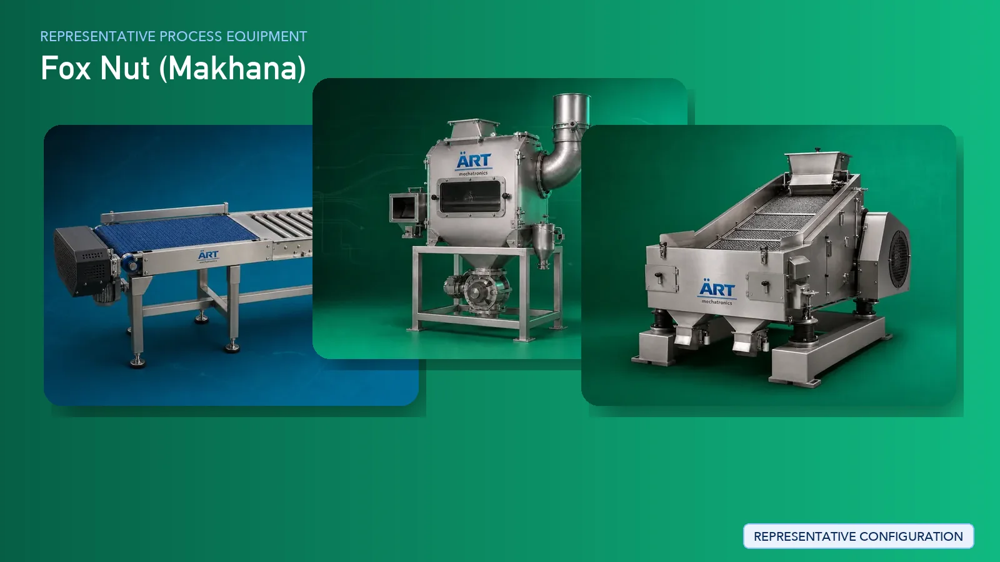

Foxnut (Makhana) Processing Plant & Machinery Solutions (Raw Seed to Popped Makhana)
Foxnut (makhana) processing is a specialized agro-processing industry where raw foxnut seeds are transformed into expanded, white popped makhana. The process requires controlled roasting, precise thermal treatment, skilled popping, and careful grading to achieve high expansion and premium product quality.

About Fox Nut (MAKHANA) processing
ART Mechatronics provides complete turnkey solutions for makhana processing plants, offering advanced systems for cleaning, roasting, tempering, popping, grading, and bulk packaging. Our solutions are designed to deliver maximum popping efficiency, uniform expansion, and high-quality output for wholesale and export markets.
Complete Foxnut
PROCESS FLOW
Raw foxnut seeds are received and fed into the processing system.
Ensures smooth and continuous flow.
Seeds are cleaned to remove dust, stones, and impurities.
Ensures:
- Uniform raw material
- Better popping efficiency
- Internal moisture activation
- Proper heat penetration
Heated seeds are rested to allow uniform heat distribution.
Ensures:
- Controlled popping
- Reduced breakage
Seeds are manually or mechanically popped to create makhana.
Ensures:
- Maximum expansion
- White, round makhana formation
- High yield
Popped makhana is lightly roasted to enhance texture and remove residual moisture.
Ensures crispness and shelf stability.
Makhana is graded based on size and quality.
Produces:
- Large size premium grade
- Medium and small grades
Final inspection ensures consistency and premium output.
Finished makhana is packed into large bags for wholesalers and exporters.
Suitable for:
- Bulk trading
- Export markets
Machinery Required for Makhana Processing Plant
- Material Handling Systems
- Pre Cleaner
- Grading Machine
- Roaster / Heating System
- Tempering Setup
- Makhana Popping Machine
- Final Roaster
- Vibratory Grader
- Inspection System
- Bag Filling Machines
Turnkey Makhana Plant Solutions
ART Mechatronics offers complete turnkey solutions for foxnut processing plants, including:
- Process design & plant layout
- Roasting and heating systems
- Popping and expansion systems
- Grading and sorting systems
- Automation & control panels
- Bulk packaging integration
- Installation & commissioning
- After-sales support
We customize solutions based on:
- Raw seed quality
- Desired product grade
- Production capacity
- Level of automation
Why Choose Art Mechatronics
- Expertise in thermal processing systems (key advantage)
- High-efficiency roasting and popping solutions
- Consistent expansion and product quality
- Minimal breakage and high yield
- Hygienic processing design
- Global export capability
Machinery in a Fox Nut (MAKHANA) plant
Where it's used
Get pricing & specs for the Fox Nut (MAKHANA) plant
Share the product, target capacity, current process and plant location. These details help our engineers discuss the right machine or line configuration.
One partner, from design to start-up
ART Mechatronics designs, manufactures, installs and commissions your Fox Nut (MAKHANA) solution with regional presence in India, UAE and Thailand.